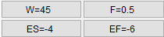
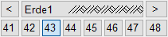

")

·Alternativer Aufruf: mittlere Maustaste auf eine Schraffurlinie oder eine Füllfläche.
·Folienbelegung: Wenn AutFol aktiviert ist, werden Schraffuren und Füllungen in der Folie 5 abgelegt.
Schraffieren oder Füllen definierter Zeichnungsbereiche.
Funktionen |
Beschreibung |
|---|---|
Schraffur über Punkte festlegen. |
|
Schraffur über Fenster festlegen. |
|
Schraffur über Linien festlegen. |
|
Schraffur über Rechteck festlegen. |
|
Schraffur entlang einer Linie oder eines Kreisbogens anlegen. |
|
Schraffur oder Füllung ändern. |
|
Vorhandene Schraffuren und Füllungen anhand ausgewählter Parameter neu generieren. |
|
Schraffur löschen. |
|
Füllung löschen. |
|
Schraffurtypen erzeugen. |
|
Schraffur nach einer Veränderung neu generieren. |
Optionen |
Beschreibung |
|---|---|
|
Auswahl des Fülltyps: |
|
Auswahl, wie der gewählte Bereich schraffiert / gefüllt werden soll: |
 |
Voreinstellungen für: W= Winkel; F= Faktor. Je nachdem, welche Schaltfläche Sie anklicken, wird im Dialog Schraffur das entsprechende Eingabefeld aktiviert. (s. Schraffur (Dialog)) |
 |
Schnellauswahl für Schraffurtyp. |
|
Übernahme der Einstellungen für Schraffuren und Füllungen. Wenn entweder die Option nur schraffieren oder nur füllen aktiviert ist, wird beim Anklicken einer Schraffur oder Füllung der Typ automatisch erkannt und die Einstellungen entsprechend übernommen. |
|
Stiftauswahl. Falls Stifte als Favoriten aktiviert wurden, werden diese an erster/oberster Stelle angezeigt. |
|
Auswahlrahmen rechteckig / polygonal / einzelne Elemente fangen. |
|
Zuletzt markiertes erneut markieren / automatischer Elementfang. |
|
Auswahlbereich bearbeiten. /+: Punkte hinzufügen; /-: Punkte entfernen; /x: Alle Punkte entfernen. Um falsch angeklickte Punkte zu entfernen, aktivieren Sie die Schaltfläche Punkte entfernen und klicken die zu löschenden Punkte an. Um alle Punkte zu löschen, müssen Sie Alle Punkte entfernen anklicken. |